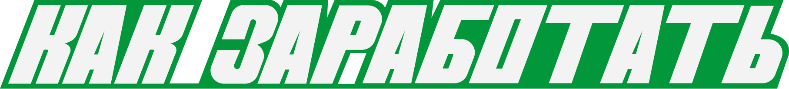
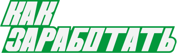

Текущая цель:

заработать денег
Текущая цель:

сдать мусор
ежедневные задания:
Сдай крышечки в пункт «Вкусвилл»
+50 ₽
Рассортируй гардероб
+20 ₽
Собери старую технику
+70 ₽
Экологичная суетология
Введение
В этом и последующих уроках мы расскажем о способах экологичного дохода, предложим реальные кейсы, поделимся советами, как спасти планету и свое финансовое положение
- 1Что такое экобизнес
- 2Риски и возможности
- 3Подборка реальных кейсов
- 4Экобизнес в будущем


РЕЗУЛЬТАТ
ТЫ РЕШИЛ ВСЕ ПРАВИЛЬНО!
ПЕРЕЙДЁМ К НОВОЙ ТЕМЕ?

РЕЗУЛЬТАТ
ОЙ ЧТО-ТО ПОШЛО НЕ ТАК,
ПОПРОБУЙ ЕЩЁ РАЗ